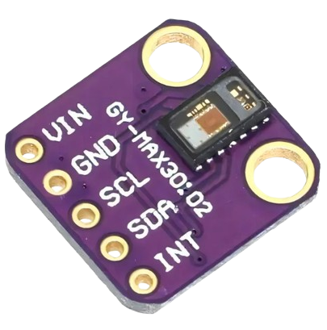
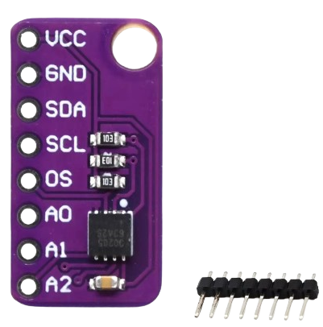
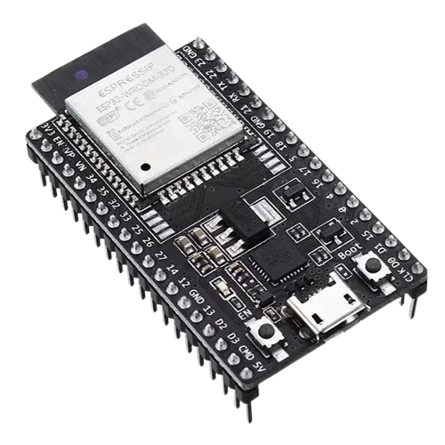

Quer saber mais sobre nosso equipamento? Abaixo está um breve resumo!

GY-MAX30105 I2C:
Monitora a frequência cardíaca por meio da iluminação e captação do sangue quando bombeado.

MAX30205:
Usado para medir a temperatura, ele é um sensor especifico para temperatura corporal e é da família do Max.

ESP32:
Possibilita a comunicação entre os sensores e o site, um equipamento que possibilita trabalhos IOT.